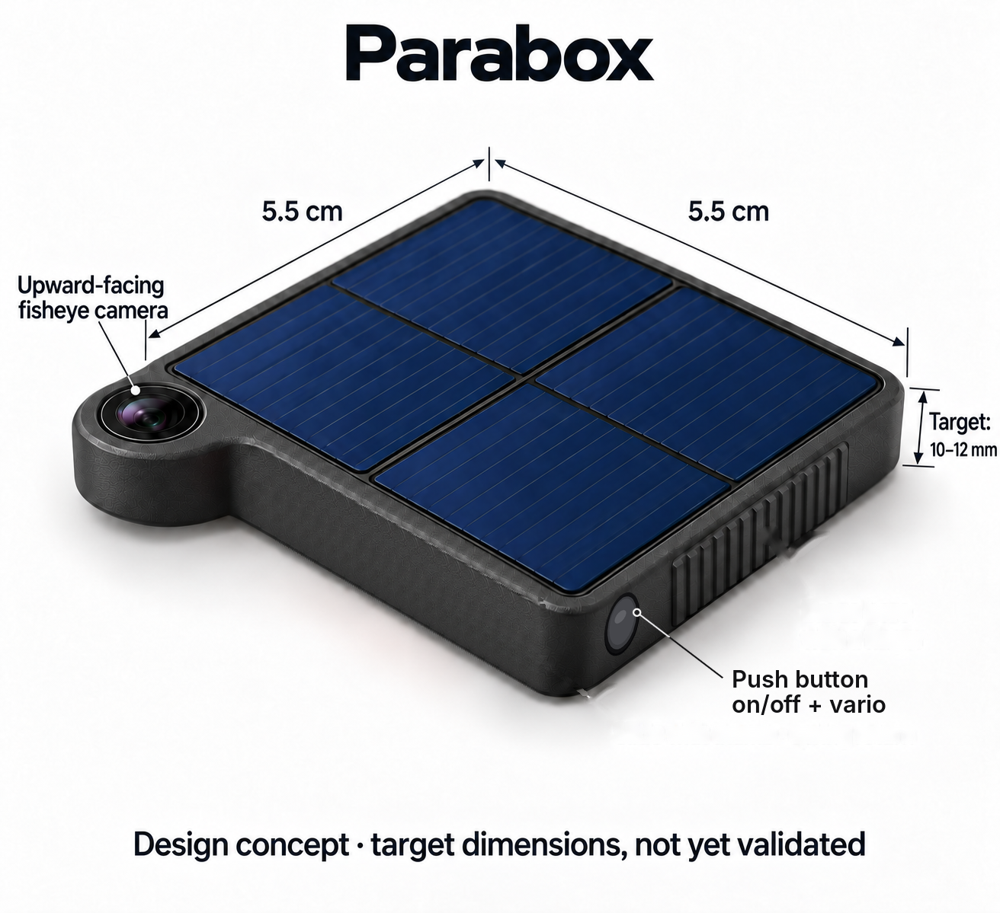

Parabox · Aufzeichnungsgerät der XCDebrief-StudieParabox · Appareil d’enregistrement de l’étude XCDebriefParabox · Recording device of the XCDebrief study
Ein Flugschreiber für den Gleitschirm.Un enregistreur de vol pour le parapente.A flight recorder for the paraglider.
Parabox hält fest, was nach einer Störung sonst verloren geht: wie die Kappe sich verhalten hat, wie der Pilot reagiert hat und wie der Flug verlaufen ist. Bild, Lage, Luftdruck und Position laufen dabei auf einer gemeinsamen Zeitbasis. Das Gerät ist das Messinstrument der XCDebrief-Studie und wird für sie gebaut, nicht für den Markt.Parabox conserve ce qui se perd sinon après un incident : le comportement de la voile, la réaction du pilote et le déroulement du vol. Image, attitude, pression et position partagent une base de temps commune. L’appareil est l’instrument de mesure de l’étude XCDebrief et il est construit pour elle, pas pour le marché.Parabox keeps what is otherwise lost after an incident: how the wing behaved, how the pilot reacted and how the flight went. Image, attitude, pressure and position share one common time base. The device is the measuring instrument of the XCDebrief study and is built for it, not for the market.

Was es aufzeichnetCe qu’il enregistreWhat it records
Eine nach oben gerichtete Fisheye-Kamera sieht Kappe, Hände und Oberkörper, leicht geneigt am Gurtzeug montiert. Sie nimmt über den ganzen Flug zehn Bilder je Sekunde auf; so lässt sich ein Einklapper und die Reaktion des Piloten Schritt für Schritt verfolgen. Gleichzeitig misst das Gerät den Luftdruck 20-mal, Lage und Beschleunigung 100-mal und die Position einmal je Sekunde. Alles liegt auf derselben Zeitbasis; Bild und Messwerte müssen nachträglich nicht zusammengeführt werden.Une caméra fisheye orientée vers le haut voit la voile, les mains et le haut du corps, montée légèrement inclinée sur la sellette. Elle prend dix images par seconde pendant tout le vol ; on peut ainsi suivre pas à pas une fermeture et la réaction du pilote. En même temps, l’appareil mesure la pression 20 fois, l’attitude et l’accélération 100 fois et la position une fois par seconde. Tout repose sur la même base de temps ; image et mesures n’ont pas à être réunies après coup.An upward-facing fisheye camera sees the wing, the hands and the upper body, mounted at a slight tilt on the harness. It takes ten frames per second throughout the flight, so a collapse and the pilot’s reaction can be followed step by step. At the same time the device measures pressure 20 times, attitude and acceleration 100 times and position once per second. Everything shares the same time base; image and measurements do not have to be merged afterwards.
- 1Fisheye-KameraCaméra fisheyeFisheye camera
- 2SolarzellenCellules solairesSolar cells
Das Blackbox-PrinzipLe principe de la boîte noireThe black-box principle
Frühere Versuche mit einer Handy-App sind daran gescheitert, dass ein Gerät, das man vor dem Flug starten muss, nicht gestartet wird. Parabox wird deshalb einmal am Gurtzeug montiert und dann vergessen. Es lädt sich mit Solarzellen, erkennt Start und Landung selbst und braucht im Flug keine Bedienung. Seine Einstellungen sind fest vorgegeben. Ein Ringspeicher hält die letzten rund 60 Flugstunden; etwa einmal im Monat wird das Gerät per Kabel an einen Computer angeschlossen. Gelöscht wird dabei nichts. Eine Funkübertragung gibt es nicht.Les essais antérieurs avec une application mobile ont échoué parce qu’un appareil qu’il faut lancer avant le vol n’est pas lancé. Parabox est donc monté une fois sur la sellette, puis oublié. Il se recharge par cellules solaires, détecte lui-même décollage et atterrissage et ne demande aucune manipulation en vol. Ses réglages sont fixes. Une mémoire circulaire conserve les quelque 60 dernières heures de vol ; environ une fois par mois, l’appareil est relié par câble à un ordinateur. Rien n’est effacé à cette occasion. Il n’y a pas de transmission radio.Earlier attempts with a phone app failed because a device that has to be started before the flight does not get started. Parabox is therefore mounted on the harness once and then forgotten. It charges from solar cells, detects take-off and landing itself and needs no operation in flight. Its settings are fixed. A ring buffer holds the last 60 or so flight hours; about once a month the device is connected to a computer by cable. Nothing is deleted in the process. There is no radio transmission.
Was für eine Untersuchung zähltCe qui compte pour une enquêteWhat matters for an investigation
Jeder Flug liegt in einem eigenen Ordner: Minutendateien mit je 600 Bildern und allen Sensordaten, ein Flugindex, eine vollständige IGC-Datei, ein Flugbuch sowie Energie- und Geräteprotokolle. Jede Minute trägt eine Prüfsumme, die Seriennummer des Geräts und seine Kalibrierwerte; Optik und Ausrichtung zum Lagesensor werden bei der Fertigung für jedes Gerät einzeln vermessen. Eine Gerätesignatur soll Herkunft und Unverändertheit nachweisbar machen. Programme lesen die Rohdateien, ohne sie zu verändern. Das Format wird veröffentlicht. Nach einer Störung soll das Gerät bis zur Sicherung der Daten nicht wieder eingeschaltet werden.Chaque vol se trouve dans un dossier propre : fichiers par minute contenant 600 images et toutes les données des capteurs, un index du vol, un fichier IGC complet, un carnet de vol ainsi que des journaux d’énergie et de l’appareil. Chaque minute porte une somme de contrôle, le numéro de série de l’appareil et ses valeurs d’étalonnage ; l’optique et l’alignement avec le capteur d’attitude sont mesurés individuellement à la fabrication. Une signature de l’appareil doit permettre de prouver l’origine et l’intégrité. Les programmes lisent les fichiers bruts sans les modifier. Le format est publié. Après un incident, l’appareil ne doit pas être rallumé avant la sauvegarde des données.Each flight sits in its own folder: minute files with 600 images each and all sensor data, a flight index, a complete IGC file, a logbook and energy and device logs. Every minute carries a checksum, the device’s serial number and its calibration values; optics and alignment to the attitude sensor are measured individually for each device during manufacture. A device signature is meant to make origin and integrity verifiable. Programs read the raw files without altering them. The format is published. After an incident the device should not be switched on again until the data are secured.
TechnikTechniqueTechnology
| BildsensorCapteur d’imageImage sensor | OmniVision OV9782, Farbe, Global Shutter, 1/4 Zoll, 1280 × 800 Bildpunkte; aufgezeichnet 640 × 400 mit 10 Bildern je SekundeOmniVision OV9782, couleur, global shutter, 1/4 pouce, 1280 × 800 pixels ; enregistré en 640 × 400 à 10 images par secondeOmniVision OV9782, colour, global shutter, 1/4 inch, 1280 × 800 pixels; recorded at 640 × 400, 10 frames per second |
| ObjektivObjectifLens | Fisheye ab Katalog, Glas, M12, 160 bis 180 Grad in der Hauptrichtung; IR-Sperrfilter, Belichtung auf Kappe und Himmelfisheye du catalogue, verre, M12, 160 à 180 degrés dans l’axe principal ; filtre IR, exposition sur voile et cielcatalogue fisheye, glass, M12, 160 to 180 degrees in the main direction; IR cut filter, exposure set on wing and sky |
| RechnerProcesseurProcessor | STM32U5 mit KameraeingangSTM32U5 avec entrée caméraSTM32U5 with camera input |
| PositionPositionPosition | u-blox MAX-M10S, einmal je Sekundeu-blox MAX-M10S, une fois par secondeu-blox MAX-M10S, once per second |
| LuftdruckPressionPressure | 20 Messungen je Sekunde20 mesures par seconde20 readings per second |
| Lage und BeschleunigungAttitude et accélérationAttitude and acceleration | Trägheitssensor, 100 Messungen je Sekundecentrale inertielle, 100 mesures par secondeinertial sensor, 100 readings per second |
| ZeitTempsTime | gemeinsame Zeitbasis aus dem GPSbase de temps commune issue du GPScommon time base from GPS |
| SpeicherMémoireStorage | 64 GB fest eingebaut, Ringspeicher für rund 60 Flugstunden64 Go intégrés, mémoire circulaire pour environ 60 heures de vol64 GB built in, ring buffer for about 60 flight hours |
| EnergieÉnergiePower | rund 32 cm² Solarzellen, Akku 700 mAh; Verbrauch im Flug rund 60 mWenviron 32 cm² de cellules solaires, accu 700 mAh ; consommation en vol environ 60 mWabout 32 cm² of solar cells, 700 mAh battery; in-flight consumption about 60 mW |
| BedienungCommandeControls | eine bündige Taste, zwei Leuchtdioden, einfacher Steigtonune touche affleurante, deux diodes, signal sonore de montée simpleone flush button, two LEDs, simple climb tone |
| AnschlussConnexionConnection | USB-C an den Computer, keine FunkübertragungUSB-C vers l’ordinateur, pas de transmission radioUSB-C to the computer, no radio transmission |
| GehäuseBoîtierHousing | rund 6 × 6 cm, 10 bis 12 mm hoch zuzüglich Objektiv, rund 100 g, spritzwassergeschützt, 3D-Druck; Klett und Fangleineenviron 6 × 6 cm, 10 à 12 mm plus l’objectif, environ 100 g, protégé contre les projections, impression 3D ; velcro et cordonabout 6 × 6 cm, 10 to 12 mm high plus lens, about 100 g, splash-proof, 3D-printed; hook-and-loop and lanyard |
| TemperaturTempératureTemperature | geplant −20 bis +50 °Cprévu de −20 à +50 °Cplanned −20 to +50 °C |
Was offen istCe qui reste ouvertWhat is still open
Die Angaben sind ein Planungsstand. Bauteile, Stromhaushalt, Bildausschnitt, Zeitzuordnung und Befestigung werden im ersten Arbeitspaket mit der Elektronikfirma geprüft; Rechenmodelle ersetzen diese Messungen nicht. Ob sich die Aufzeichnungen für Sicherheitsuntersuchungen eignen, wird nicht behauptet, sondern mit der fachlichen Rückmeldung der SUST abgeglichen. Während der Studie sind die Bilder auf dem Gerät verschlüsselt, und die Aufnahmen gehören dem Piloten.Ces indications sont un état de planification. Composants, bilan énergétique, cadrage, synchronisation temporelle et fixation sont vérifiés avec l’entreprise d’électronique lors du premier lot de travail ; les modèles de calcul ne remplacent pas ces mesures. L’aptitude des enregistrements aux enquêtes de sécurité n’est pas affirmée, mais confrontée à l’avis technique du SESE. Pendant l’étude, les images sont chiffrées sur l’appareil, et les enregistrements appartiennent au pilote.These figures are a planning status. Components, power budget, framing, time alignment and mounting are tested with the electronics company in the first work package; calculations do not replace these measurements. Suitability of the recordings for safety investigations is not claimed but checked against the technical feedback of the STSB. During the study the images are encrypted on the device, and the recordings belong to the pilot.
HerkunftOrigineBackground
Die Idee geht auf 2018 zurück. Mit einem Innosuisse-Innovationsscheck entstand mit der FHNW ein Prototyp mit Smartphone am Tragegurt; der Testflug gelang, im Alltag startete die App niemand. Ein zweiter Anlauf mit eigener Elektronik wurde 2024 abgebrochen. Parabox setzt deshalb auf ein Gerät, das man nicht bedienen muss.L’idée remonte à 2018. Grâce à un chèque d’innovation Innosuisse, un prototype avec smartphone sur l’élévateur a été réalisé avec la FHNW ; le vol d’essai a réussi, mais au quotidien personne ne lançait l’application. Un deuxième essai avec une électronique propre a été abandonné en 2024. Parabox mise donc sur un appareil qu’il n’est pas nécessaire de manipuler.The idea goes back to 2018. With an Innosuisse innovation cheque, a prototype with a smartphone on the riser was built with the FHNW; the test flight worked, but in everyday use nobody started the app. A second attempt with own electronics was abandoned in 2024. Parabox therefore relies on a device that needs no operating.
Stand November 2026. Ausführlich in Anlage A des Gesuchs zur XCDebrief-Studie.État novembre 2026. En détail dans l’annexe A de la demande relative à l’étude XCDebrief.As of November 2026. In detail in Appendix A of the XCDebrief study application. · Zur StudieVers l’étudeTo the study · Warum ein eigenes StudiengerätPourquoi un appareil d’étude propreWhy a dedicated study device